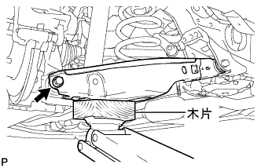

Coil Spring Rear LH Removal |
| 1. Disconnect Battery Negative Terminal |
| 2. Remove Rear Tire |
| 3. Remove Height Control Sensor Sub-assembly Rear (w/ Discharge Headlight) |
 |
Disconnect the connector and disengage the clamp.
 |
Remove the 2 bolts and remove the height control sensor assembly (rear).
| 4. Remove Rear Stabilizer Link Assembly LH |
 |
Remove the nut and the rear stabilizer cushion.
 |
Remove the nut and remove the rear stabilizer link assembly LH.
| 5. Loosen Rear Suspension Arm Assembly NO.2 LH |
 |
Loosen the 2 bolts of the rear suspension arm assembly No.2 LH.
| 6. Disconnect Shock Absorber Assembly Rear LH |
 |
Support the rear suspension arm assembly No.2 LH with a jack, with a block of wood in between.
 |
Remove the bolt and nut, and disconnect the rear shock absorber assembly LH.
| 7. Remove Coil Spring Rear LH |
 |
Remove the bolt and nut on the axle carrier side of the rear suspension arm assembly No.2 LH.
Gradually lower the jack and remove the rear coil spring insulator upper LH and rear coil spring LH together.
| 8. Remove Rear Coil Spring Insulator Upper LH |
| 9. Remove Rear Coil Spring Insulator Lower LH |